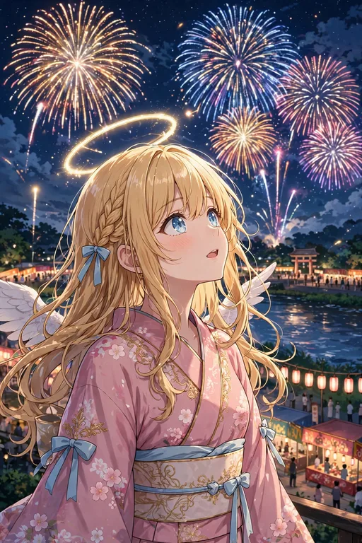
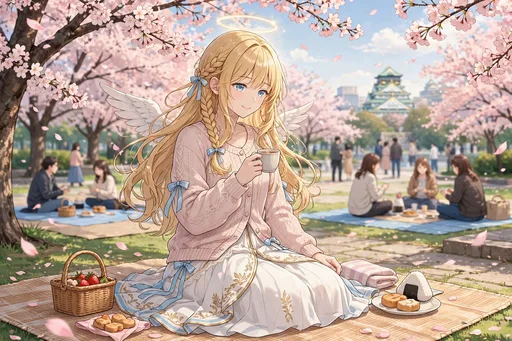
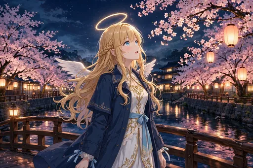

セラフィナ 第3弾『日本の四季編』イラストパック

ストーリー紹介
日本の四季と年中行事をめぐる30枚です。春のお花見と夜桜、夏祭りと花火、スイカ割り、秋の月見と紅葉狩り、初雪にはしゃぎ、こたつでみかん、大晦日の祈りと初詣まで。季節が移るたび、日本の暮らしのリズムが少しずつ身についていく一年の物語です。
春の花見と夜桜に始まり、夏祭りと花火、スイカ割り、秋の月見と紅葉狩り、初雪にはしゃぎ、こたつでみかんを食べ、大晦日の祈りと初詣まで。季節の行事ひとつひとつに驚き、楽しみ、やがて当たり前のようにこなしていく姿に、日本の一年のリズムが身についていく様子が表れます。
ダウンロード販売（ZIP 3分割）／全年齢／BOOTH「angel222」で販売中
商品情報
| タイトル | セラフィナ 第3弾『日本の四季編』イラストパック｜見習い天使の現代日本コメディ |
|---|---|
| 収録内容 | イラスト30点（ダウンロード販売） |
| 価格 | 500円 |
| 販売 | BOOTH「angel222」 https://angel222.booth.pm/items/9076137 |
| 備考 | 全年齢。登場するキャラクターは架空の存在です。イラストにはAI生成を含みます |
場面紹介（全30枚）


- 1. 桜の下で花見 — 春、桜の下で花見をする場面。
- 2. 桜と私服の散歩 — 桜並木を私服で散歩する場面。
- 3. 花粉でくしゃみ — 花粉でくしゃみをする場面。
- 4. 春雨と傘 — 春雨の中、傘をさして歩く場面。
- 5. 菜の花畑 — 一面の菜の花畑に立つ場面。
- 6. 桜餅をほおばる — 桜餅をほおばる場面。
- 7. 夜桜見物 — 夜桜を見物する場面。
- 8. 新しいノートと文房具にときめく — 新しいノートと文房具にときめく場面。
- 9. 海辺で麦わら帽子 — 夏、海辺で麦わら帽子をかぶる場面。
- 10. かき氷で頭がキーン — かき氷を食べて頭がキーンとなる場面。
- 11. 夏祭りの屋台巡り — 夏祭りの屋台を巡る場面。
- 12. 浴衣で夕涼み — 浴衣姿で夕涼みをする場面。
- 13. 花火を見上げる — 夜空の花火を見上げる場面。
- 14. スイカ割り — スイカ割りに挑戦する場面。
- 15. 扇風機の前で「あー」 — 扇風機の前で「あー」と声を出す場面。
- 16. 夕立で軒下に駆け込む — 夕立に遭って軒下に駆け込む場面。
- 17. 紅葉狩り — 秋、紅葉狩りに出かける場面。
- 18. 月見団子 — 月見団子を供えて月を眺める場面。
- 19. 図書館で読書の秋 — 図書館で読書にふける、読書の秋の場面。
- 20. 焼き芋をふうふう — 焼き芋をふうふうしながらほおばる場面。
- 21. ハロウィンに天使コス（本物）で参加 — ハロウィンに天使コス（本物）で参加する場面。
- 22. 秋雨と落ち葉の道 — 秋雨の落ち葉の道を歩く場面。
- 23. 初雪ではしゃぐ — 冬、初雪ではしゃぐ場面。
- 24. こたつでみかん — こたつでみかんを食べる場面。
- 25. クリスマスのイルミネーション — クリスマスのイルミネーションに包まれる場面。
- 26. 年越しそば — 大晦日に年越しそばをすする場面。
- 27. 初詣のおみくじ — 初詣でおみくじを引く場面。
- 28. 福袋を開ける — 福袋を開ける瞬間の場面。
- 29. 雪だるま作り — 雪だるまを作る場面。
- 30. 大晦日の静かな祈り — 大晦日の夜、静かに祈る場面。
ほかのイラストパック
物語の次は、第4弾『癒しの天使のお仕事編』です。